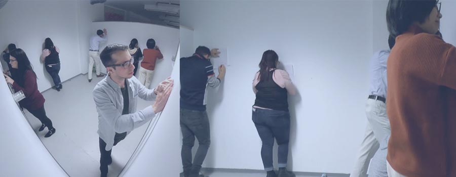
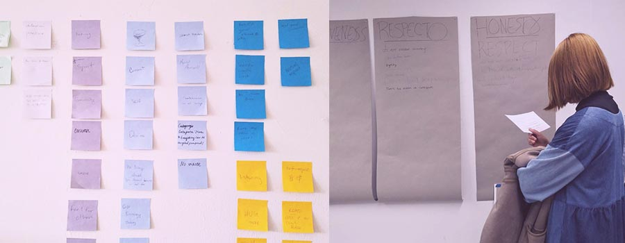
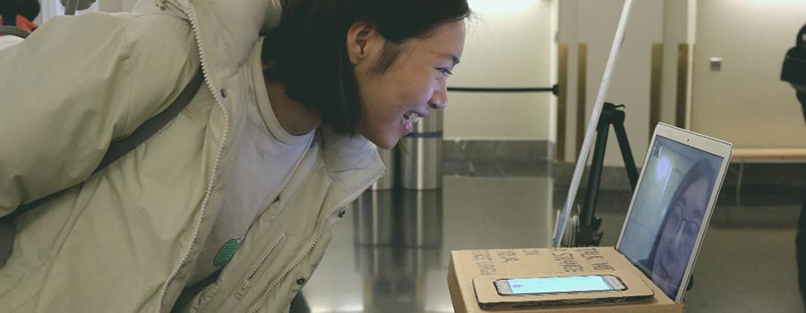

About me
I am a Chinese-born interdisciplinary artist / creative technologist, currently based in Chicago. I create interactive installations and gamified experiences. My practice focuses on exploration of human interaction and engagement in the scope of the ever-changing social dynamics, with the assistance of technology as a means of communication with the audience. Through the integration of various media such as experimental games, interactive installations and kinetic sculptures, with playfulness and humor, I seek to investigate a wide range of curiosities in the areas of social cognition and behavior, with a particular focus on person sensory perception, emotion experience and collective intelligence.
My creative works have been exhibited at venues including SLAC National Accelerator Laboratory, San Francisco; Lithium Gallery, Chicago; Yoonarte Gallery, Shanghai, and others. I have a background in English studies and a Master of Fine Arts in Art and Technology Studies from the School of the Art Institute of Chicago.
About my practice - a collaborative engagement
My practice focuses on creating a user-centered, process-oriented experience, through the integration of various media such as experimental games,
interactive installations and kinetic sculptures, with playfulness and humor.
Let the creative, collaborative experience itself be the manifestation of the relationship between my audience, my work and me.
Thought process / work flow / strategies

INSPIRATION
Observe - Survey/Interview - Body Language

IDEATION
Create Concept - Create Framework - Journey Map

IMPLEMENTATION
Rapid Prototype - Keep Iteration - Get Feedback